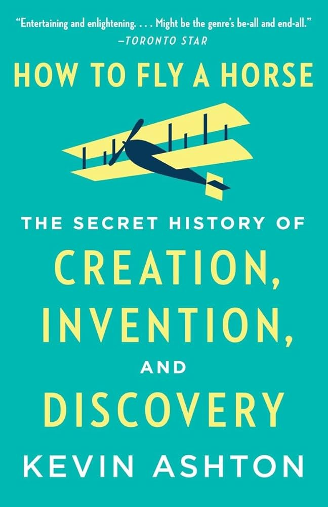

Some fun facts about me
I do not have a favorite book but the book I read last is a non-fictional book titled "How to fly a Horse" by Kevin Ashton. I like how the book brings out different ideas for improving oneself and overcoming problems and struggles using creativity and innovation. The book can be purchased from amazon here.
My current favorite song is "Birds of a feather" by Billie Eilish. Feel free to check out a short sample of it below or click here to listen to the full version of the song on Youtube.
While I am still yet to find my favorite movie this year, one of my past favorites include Sonic 2. Check out the trailer for the movie below.